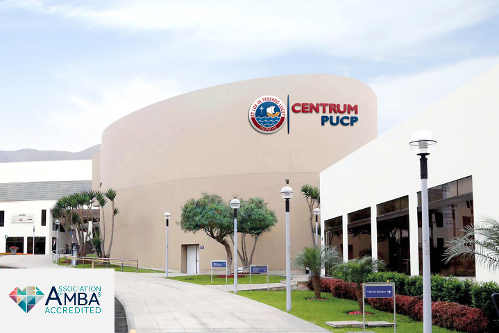

Formation Académique
Voici un aperçu de mon parcours académique, qui témoigne de mes compétences et de ma formation professionnelle dans divers domaines, notamment en programmation, gestion, comptabilité et administration des affaires.
AEC – Informatique Programmeur-analyste
Collège LaSalle, Montréal, QC (2023-2024)
Formation professionnelle en programmation et analyse informatique, couvrant diverses technologies et langages de programmation tels que HTML, CSS, JavaScript, Python, et plus.

Doctorat en Gestion Stratégique des Affaires
Université Pontificale Catholique du Pérou – CENTRUM PUCP (2017-2023)
Spécialisation en gestion stratégique des affaires avec un accent sur la gestion des risques et la prise de décisions financières.Maîtrise en Administration Stratégique des Affaires
Université Pontificale Catholique du Pérou – CENTRUM PUCP (2009-2012)
Maîtrise orientée vers la gestion d'entreprises avec des connaissances approfondies en gestion financière.Deuxième Spécialité en Gestion Financière et Gestion des Risques
Université Nationale de San Agustín, Arequipa, Pérou (2006-2007)
Approfondissement des connaissances en gestion des risques financiers et analyse des données économiques.Titre professionnel Comptable Public
Université Catholique de Santa Maria, Arequipa, Pérou (1999-2003)
Formation en comptabilité, audit et fiscalité avec des compétences en gestion financière et en reporting d'entreprise.